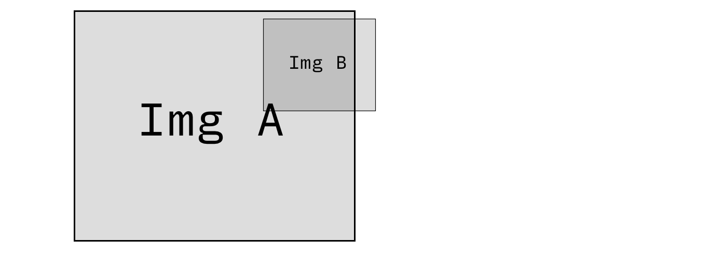
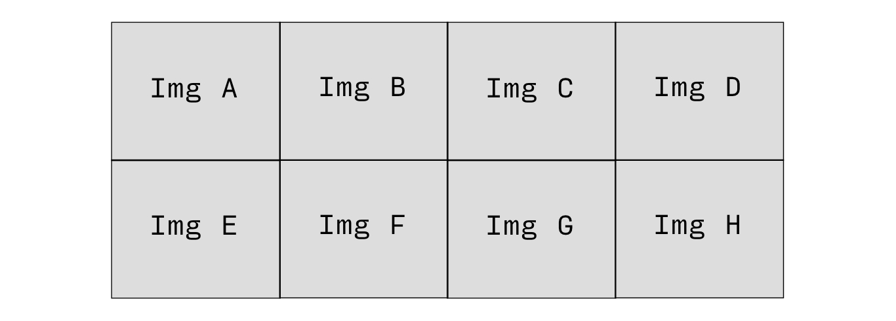
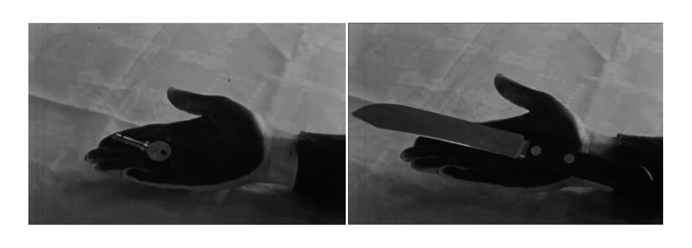

INSTRUCTIONS
Choose an image of a landscape that embodies a utopian space, AKA an "other space" (to quote Foucault). This might be a photograph or video that you have taken, or even a screen capture of an existing image or a virtual landscape.
Then, add to this image at least one more image that undermines the seemingly utopian vision of the first, revealing it to be ordinary, dangerous, repugnant, or even dystopian. How you add this second visual element is up to you and it is here that you can assert a great amount of creativity. It can be side by side with the first image, or incorporated within it.
If you choose to make a video rather than an image, the camera should be more or less still and there should be no sound. The piece should primarily rely on the visual composition to create a narrative or tension that disrupts standard perception and provokes further thought.
Have these questions in mind when constructing your composition:
HOW TO SUBMIT
You project should be a single image or video file. Please upload this to the "Week 03: Stalker" Are.na channel. If your project is too large to upload to Are.na, please upload to your OneDrive account and post a link to the file on Aren.a.
Possible ways of creating multi-image compositions:
You can layer images:

You can have a collection of images:

Examples
The movies we watched in class last Thursday offer examples of image sequences in which one undermines the ideas represented by the other. For example, in Meshes of the Afternoon, we see a hand holding a key in one frame; in the next frame, the same hand is instead holding a knife. The key can be seen to represent freedom, possibility, opportunity; the knife, conversely, represents danger, violence, destruction.

Here is an example of a video composition: